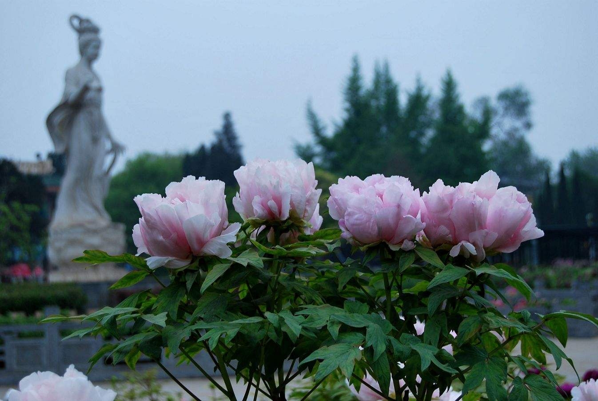
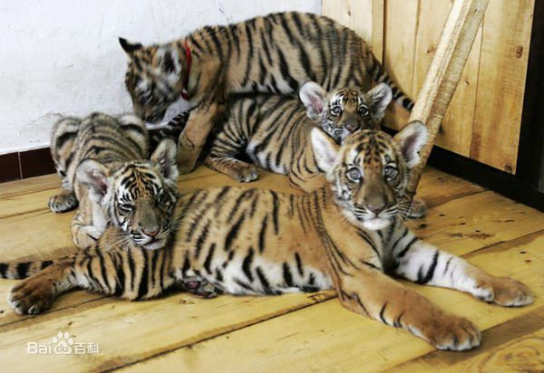

王城公园
简介:
王城公园，又名洛阳王城公园。坐落在十三朝古都洛阳西工区，因修建在东周王城遗址上而得名。公园始建于1955年，坐落在洛阳市文化馆西的全国重点文物保护单位——东周王城遗址上。占地一千零八十亩，包含古文化区、牡丹花圃、动物馆、游乐场等几个部分，它是全国第一座遗址公园，也是河南省最大的综合性公园。
王城公园是洛阳市政府为了纪念历史名城——周王城，在其遗址上修建的。
王城公园位于河南省洛阳西工区，毗邻洛河。公园被洛河的支流流涧河自西南至东北自然分割成两个区域，虽然地处平原，但是园内多人造地势，尤其在涧河两岸，起伏更大。
主要景观:
公园大门有三个，分别为位于中州路的南大门与西门，位于北侧临菏泽街的北门，三处均设有售票处。从南大门进入景区，首先看到的的就是牡丹仙子的雕像以及牡丹造型观赏区，向东是儿童游乐区与索道入口，索道穿过园区，可以直接到达园区北门动物园。牡丹广场向西是沉香楼，走过回廊，尽头是园区西门，西门向北，依次是：九鼎壁、河图洛书碑、凤阙、韶月台，此时沿河岸东行，穿过涧河桥，向前依次是：水鸟园，猴山，熊园等。继续向东，是长颈鹿和其他动物，牡丹观赏区和苗木温室位于西门，该温室在牡丹展期间不收费。
此外，王城公园开发了虚拟游览功能，可以通过访问官方网站体验游园。
No.1 丹阁迎宾
沉香楼（丹楼）是王城公园主要景观之一，建筑面积800多平方米，由42根立柱支撑，三层仿古建筑，高2204米，是目前洛阳市最高，装饰最为华美的仿古建筑。整个建筑雕梁画栋，造型精巧，飞檐斗拱，气势恢弘，与园内亭，台，楼，榭等园林景观融为一体。沉香楼是王城八大景之一，楼阁周围以规则几何图形组成的大型牡丹坛，内有姚黄、魏紫、豆绿、兰田玉等名贵牡丹83种，1800多株，与沉香楼相映生辉
沉香楼
No.2 河图洛书碑
河图洛书碑
河图洛书是根据"河出图，洛出书"的传说，由雕塑家宫殿先生创作而成。相传远古时期，黄河中出现一头马头龙身的神兽---龙马，龙马背负河图，伏羲氏根据河图推演了八卦。大禹在治理洛水时，见到一只神龟，背负玉版，上刻洛书。大禹从洛书中悟出治理天下的九类大法，治服了洪水，划天下为九州。“河图洛书”是传说中的中华民族最早的历史文献，是中华民族祖先心灵思维的最高成就。河图少洛书碑四角竖立的龙、凤、熊、羊，是中国古代民族的图腾演化而来，寓意炎黄子孙忠实的守护着华夏文明。河图洛书碑具有深刻的内涵和别具匠心的独特设计，是王城公园经典景观之一
No.3 乐台钟声
韶乐台是王城公园西周文化区的主体建筑，是根据周代“筑其台榭，美其宫”的风格建造的。韶乐台的底部东、西、南三面墙上镶嵌的黑色线刻画反映了从公元前七七零年到公元前二二一年间发生的与洛阳有关的三十余个历史事件。称为故事墙，韶乐台上部为周代纪念性建筑“四阿重屋”。室内陈设编钟，编磬等乐器，定时演奏韶乐。整个建筑巍峨壮观，具有浓厚秦汉风韵。“乐台钟声”是王城公园经典景观之一。
公园灯会
No.4 靓思飞瀑
凤湖湖面约10000平方米，湖岸逶迤曲折，垂柳依依，湖水波光粼粼。曲桥起伏贯穿两岸。凤湖北岸，垒石成山，绝壁兀起，名曰“涧溪”。峰顶清泉飞瀑，恰似"高山阔水"，气度非凡。西岸筑一小型庭院式仿古建筑---“靓思园”，与北岸瀑布形成“靓思飞瀑”的壮丽景观。
No.5 周鼎雄居
"雄都定鼎地，势据万国尊"。雄据公园正门内高台上的仿铜周鼎，高4.7米，长方斗形，口径长3.9米，宽3.08米。四面腹部和腿上均有云雷纹铺底，饕餮纹饰面，四角和每面正中共有12只扉梭。饕餮纹大眼粗眉，两侧各有一道立夔纹，花饰凸鼓.高大雄伟，金光灿烂。"周鼎雄踞"为王城八景之一。
No.6 凤阙映彀
凤阙映彀
“洛阳宫阙郁嵯峨，千古荣华逐逝波。”周文化区入口，耸立一对峰腰型建筑－－阕。阕基础以上3.9*3.3米，檐口5.2*4.4米，高8.25米，用420立方米青石砌成。檐下有逼真的斗拱、椽、枋、檐上有脊、吻，四周有绵刻仿古书。具有浓厚的秦汉风格，古朴典雅，雄伟挺拔，体现了洛阳史上“丹阕映彀”是王城八景之一。
No.7 牡丹观赏区
牡丹观赏区主要由“洛阳牡丹园、紫斑牡丹园、精品牡丹园”三大园组成，国色牡丹，万花一晶，园内共有牡丹品种840多个，10万余株。牡丹文化区共立碑文100多幅 ，将历史上文豪墨客、党和国家领导人等贤人哲士赞颂牡丹的名诗绝句、题词题字，镌刻于壁，陈列于近500米的长廊
 牡丹
No.8 动物园
洛阳王城动物园为豫西地区唯一一座动物园，园内圈养、散养野生动物101种，1372头(只)，其中有大熊猫、华南虎、东北虎、金钱豹、黑熊、棕熊、丹顶鹤等国家一二类野生动物62种[2] ，还有非洲象、白犀牛、黑猩猩、袋鼠等国外珍稀动物。2009年1月，王城公园的雌虎“妞妞”和 “果果”先后与雄虎“盼盼”、“亮亮”交配受孕，分别于2009年4月和5月，产下2雄2雌4只小老虎（其中最小的1只雄虎为“果果”和“盼盼”的孩子，其余3只为“妞妞”和“亮亮”的孩子。）王城公园成功繁育4只华南虎，是中国长江以北地区的第一例，对洛阳打造华南虎养殖繁育基地的品牌、挽救华南虎种群具有重大意义，王城公园因此受到省、市林业部门的表彰奖励。2013年，该园共成功繁育6只华南虎，新增数量为历年之最。截至2015年4月，王城公园动物园人工繁育华南虎总数已累计达30只，部分交流至其他城市动物园，现有华南虎总数达23只，居全国第一，也是世界第一。
 华南虎
 大熊猫
大熊猫
王城公园地图及旅游路线:
开放时间
6:00-21:00
公交线路:
9、10、11、15、19、32、40、50、59、101、102、103路王城公园下车。
其中从洛阳火车站步行约100米，到达洛阳火车站公交站点，沿途的大站有火车站、百货楼、市中心医院、王城公园等，在中州路上还可以乘车9、101、59、19、15路到王城公园下车。